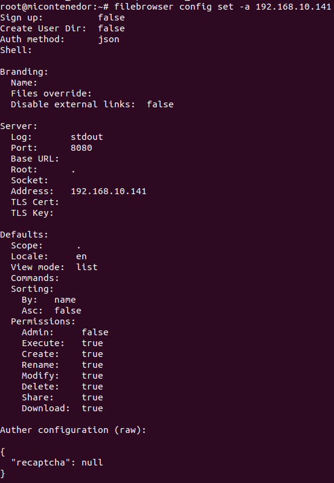
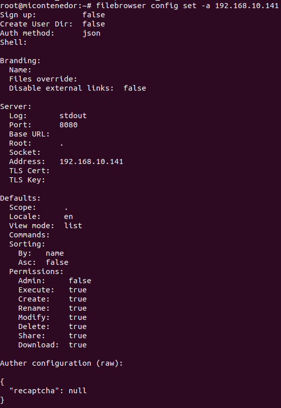

Primero tienes que crear un contenedor con lxc, para eso tienes que poner el comando,
lxc launch (el software deseado, en este caso ubuntu) : (La versión deseada) nombre del contenedor:
lxc launch ubuntu:18.04 micontenedor
Despues ejecutas tu contenedor:
lxc exec micontenedor bash
Instalamos Filebrowser con el programa de "curl" (client URL) por lo tanto, pondremos el comando "curl" (opciones deseadas, la URL. Poniendo el comando curl, seguido de la URL del programa deseado. En este caso Filebrowser, procedemos a instalar el programa deseado. Si se le añade el pipe al final de la línea de comando se instalará sin mostrar la información de la descarga.):
curl -fsSL https://filebrowser.xyz/get.sh | bash
filebrowser config set -a 192.168.10.141
 

Creas una cuenta de Filebrowser:
filebrowser users add micontenedor 12345

Ejecutas el siguiente paso para que el servidor este activo y le añadimos el & para poder seguir haciendo mas cosas:
filebrowser -r /home/ubuntu &

Una vez instalado el filebrowser, nos conectaremos a nuestro servidor filebrowser a través de un cliente en la misma red, para poder acceder tenemos que poner en el buscador nuestra IP seguido de el puerto que utiliza filebrowser (8080)